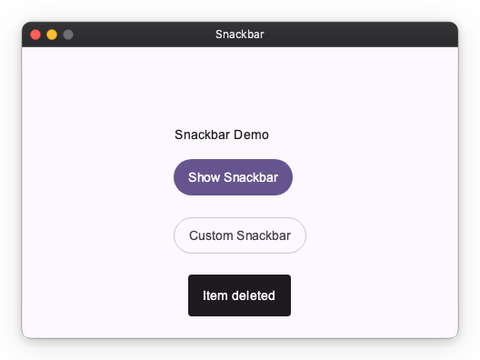
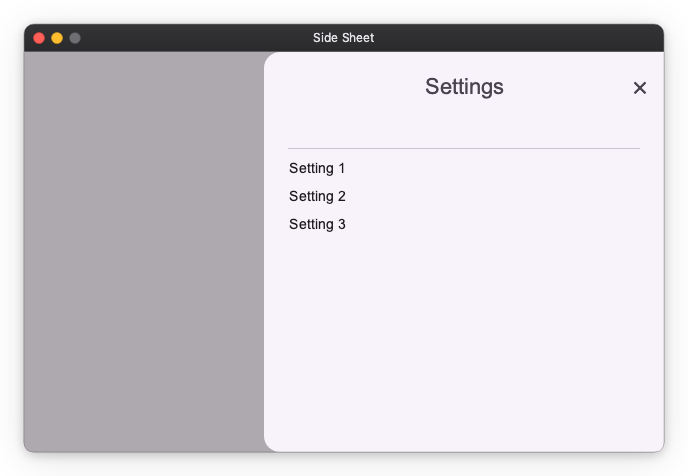
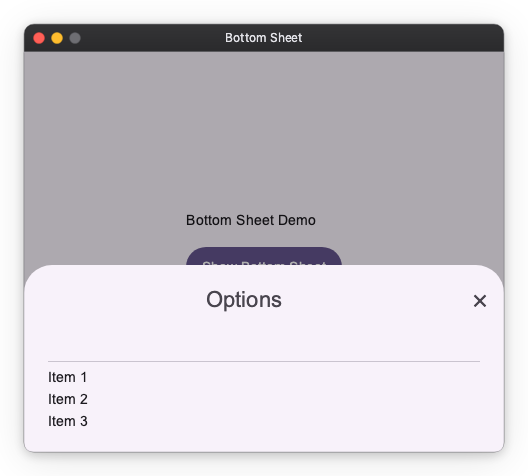
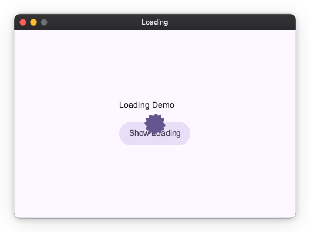

Material Overlay¶
MaterialOverlay is a Material Design 3-flavored subclass of Overlay — the framework's system for displaying content above the main widget tree. It is automatically configured by App.
Import convention
Import App and Overlay from nuiitivet.material.
The rest of this guide follows this convention.
The base Overlay exposes one primitive, show() — see Primitives for details. MaterialOverlay wraps it with two additions:
- Shortcut methods —
dialog(),snackbar(),bottom_sheet(),side_sheet(),loading()— each pre-configured with the correct MD3 position and transition. - Intent resolution — shortcuts accept plain data objects (intents) in addition to widgets, decoupling business logic from the widget layer.
Accessing Overlay¶
App registers an Overlay instance as the root overlay. In most cases, use Overlay.root() to retrieve it directly.
Overlay.of(self) walks up the widget tree and returns the nearest ancestor Overlay. Use this only when you have intentionally nested an Overlay inside the widget tree and need to reach that inner instance rather than the root.
Shortcuts at a Glance¶
| Shortcut | show() call |
Scrim |
|---|---|---|
dialog() |
show(route, backdrop=True, dismiss_on_outside_tap=...) |
Fade |
snackbar() |
show(widget, passthrough=True, timeout=...) |
None |
side_sheet() |
show(route, backdrop=True, dismiss_on_outside_tap=...) |
Fade |
bottom_sheet() |
show(route, backdrop=True, dismiss_on_outside_tap=...) |
Fade |
loading() |
show(widget, passthrough=True) |
None |
Every shortcut returns an OverlayHandle. You can await it to receive the result after the overlay closes:
For a full treatment of the handle/await pattern and MVVM architecture, see Dialogs.
Dialog¶
Displays a modal dialog with a scrim. This is the most common use case; refer to Dialogs for the complete guide including custom dialogs, OverlayAware, and MVVM patterns.
import nuiitivet.material as nv
overlay.dialog(
nv.BasicDialog(
title="Delete item?",
message="This action cannot be undone.",
actions=[
nv.Button("Cancel", on_click=lambda: nv.Overlay.root().close(None), style=nv.ButtonStyle.text()),
nv.Button("Delete", on_click=lambda: nv.Overlay.root().close(True), style=nv.ButtonStyle.text()),
],
)
)
| Parameter | Type | Default | Description |
|---|---|---|---|
dialog |
Widget \| Any |
required | Dialog widget, or an intent resolved by the overlay |
dismiss_on_outside_tap |
bool |
True |
Dismiss when tapping the scrim |
For a fully custom Route (non-standard transition or backdrop), call show() directly. Dialogs do not auto-dismiss, so there is no timeout parameter.
Snackbar¶
Displays a brief, non-blocking message at the bottom of the screen. Background interaction remains active. Automatically dismisses after duration seconds.
Pass a Snackbar widget for more control over appearance:
| Parameter | Type | Default | Description |
|---|---|---|---|
message |
str \| Snackbar |
required | Message text or a Snackbar widget |
duration |
float |
3.0 |
Display duration in seconds |

Side Sheet¶
Displays a modal sheet that slides in from a side edge. The slide-in edge is a placement concern owned by side_sheet(): the side argument drives three things at once — the slide direction of the transition, the screen-edge alignment, and which (inner, away-from-edge) corners are rounded. The corner rounding is applied by side_sheet() via the corner_radius modifier, so the SideSheet widget itself renders a square container and no longer takes a side parameter.
import nuiitivet.material as nv
overlay.side_sheet(
nv.SideSheet(
headline="Settings",
content=nv.Text("Sheet content here"),
),
side="right",
)
| Parameter | Type | Default | Description |
|---|---|---|---|
sheet |
SideSheet |
required | Side sheet widget |
side |
"right" \| "left" |
"right" |
Edge the sheet slides in from |
dismiss_on_outside_tap |
bool |
True |
Dismiss when tapping the scrim |

Bottom Sheet¶
Displays a modal sheet that slides up from the bottom edge. The same principle as side_sheet() applies: the transition direction (slide from bottom), screen-edge position (bottom-center), and corner radii (top two corners rounded, bottom edge flush) must all stay consistent. Because all three are determined solely by the fact that it is a bottom sheet, bottom_sheet() accepts only a BottomSheet widget rather than an arbitrary OverlayRoute.
import nuiitivet.material as nv
overlay.bottom_sheet(
nv.BottomSheet(
headline="Options",
content=nv.Text("Sheet content here"),
)
)
| Parameter | Type | Default | Description |
|---|---|---|---|
sheet |
BottomSheet |
required | Bottom sheet widget |
dismiss_on_outside_tap |
bool |
True |
Dismiss when tapping the scrim |

Loading Indicator¶
Displays a centered loading indicator. The overlay is pass-through — background content remains visible and interactive, and there is no dismiss gesture. Use handle.close(None) or while_loading() to dismiss it.
Manual Control¶
Context Manager¶
while_loading() shows the indicator and guarantees it is dismissed when the block exits, even on exceptions:
Custom Indicator¶

Material Design 3 Transitions¶
Each shortcut applies a pre-configured MD3 transition automatically. All transitions use Material Expressive spring-based easing (EXPRESSIVE_DEFAULT_EFFECTS).
| Shortcut | Enter | Exit | Scrim |
|---|---|---|---|
dialog |
Fade in + scale up from 92% | Fade out + scale down to 96% | Fades with content |
snackbar |
Fade in + slide up 20 px | Fade out | None |
bottom_sheet |
Slide in from bottom edge | Slide out to bottom edge | Fades with content |
side_sheet |
Slide in from side edge | Slide out to side edge | Fades with content |
loading |
Instant | Instant | None |
These shortcuts accept only their typed arguments — a Widget (or intent) for dialog()/loading(), str/Snackbar for snackbar(), and the corresponding sheet widget for bottom_sheet()/side_sheet(). They do not accept a free-form Route/OverlayRoute, because each shortcut owns the MD3 transition, screen-edge position, and (for sheets) corner radii, and accepting an arbitrary route would break that consistency. bottom_sheet() derives everything from the fact that it is a bottom sheet; side_sheet() derives it from its side argument.
To display fully custom overlay content with a non-standard transition or backdrop, call show() directly.
Intent System¶
Intents let view models request overlays without importing widget classes. Pass a plain data object to a shortcut; Overlay resolves it to the correct widget via the registered overlay_routes.
Built-in Intents¶
| Intent | Resolves to | Shortcut |
|---|---|---|
BasicDialogIntent |
BasicDialog with an OK button |
dialog() |
LoadingIntent |
Built-in LoadingIndicator |
loading() |
import nuiitivet.material as nv
overlay.dialog(nv.BasicDialogIntent(title="Error", message="Something went wrong."))
Custom Intents¶
Register a mapping from intent type to widget factory in App:
from dataclasses import dataclass
import nuiitivet.material as nv
@dataclass(frozen=True)
class ConfirmIntent:
message: str
nv.App(
HomeScreen(),
overlay_routes={
ConfirmIntent: lambda intent: nv.BasicDialog(
title="Confirm",
message=intent.message,
actions=[
nv.Button("Cancel", on_click=lambda: nv.Overlay.root().close(False), style=nv.ButtonStyle.text()),
nv.Button("OK", on_click=lambda: nv.Overlay.root().close(True), style=nv.ButtonStyle.text()),
],
),
},
).run()
Dispatch from anywhere in the widget tree:
async def on_submit(self) -> None:
handle = nv.Overlay.of(self).dialog(ConfirmIntent(message="Submit form?"))
result = await handle
if result.value is True:
self.submit()
For more on intents in the context of MVVM architecture, see Dialogs — Architecting Dialogs in MVVM.